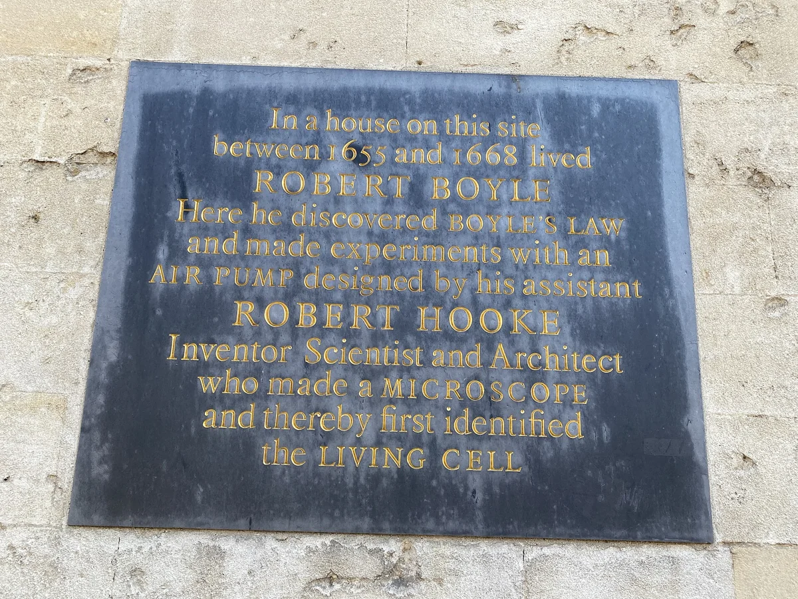
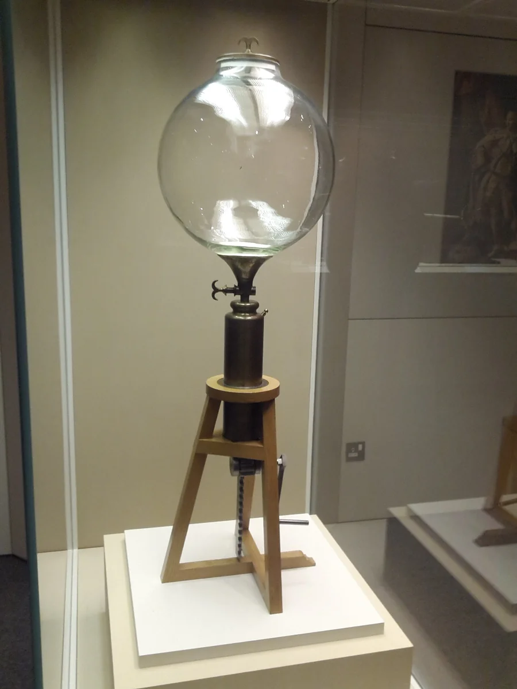
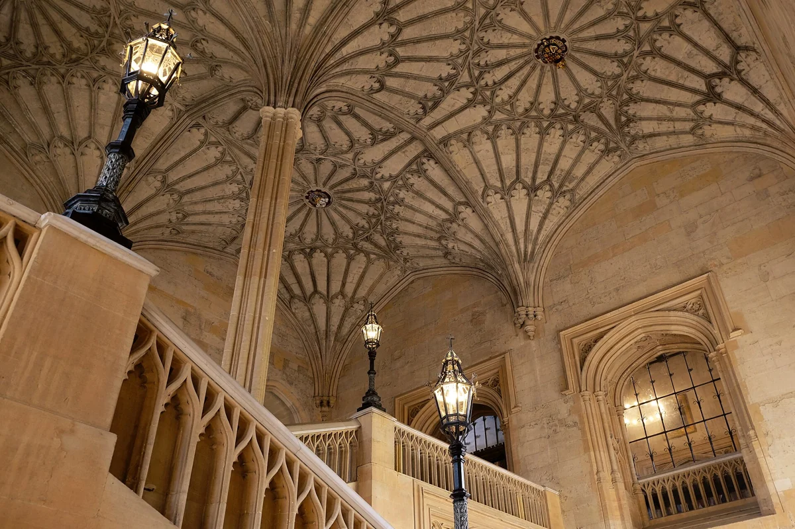
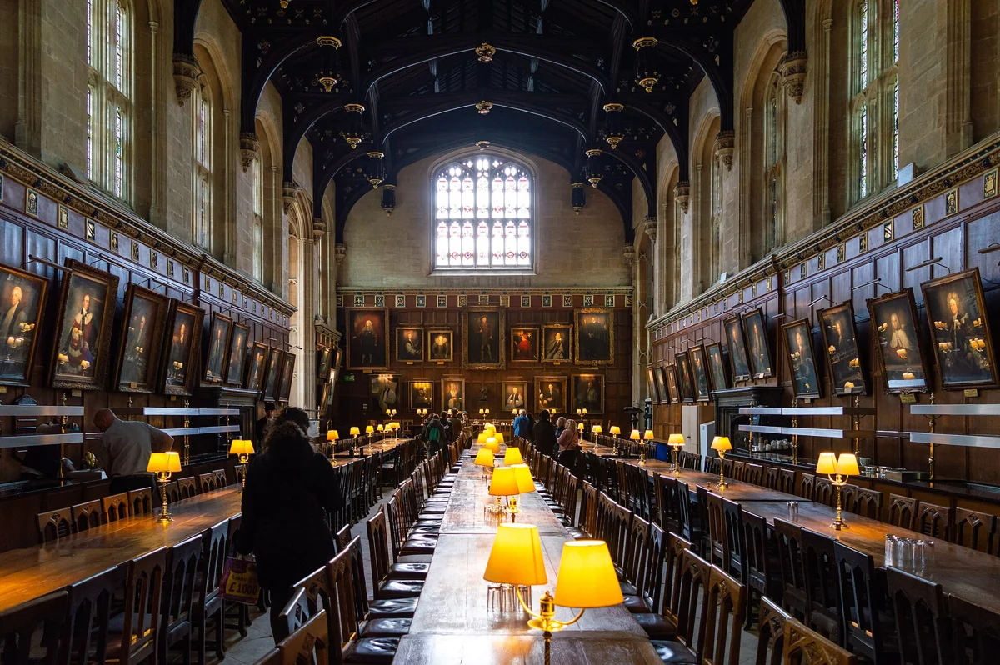
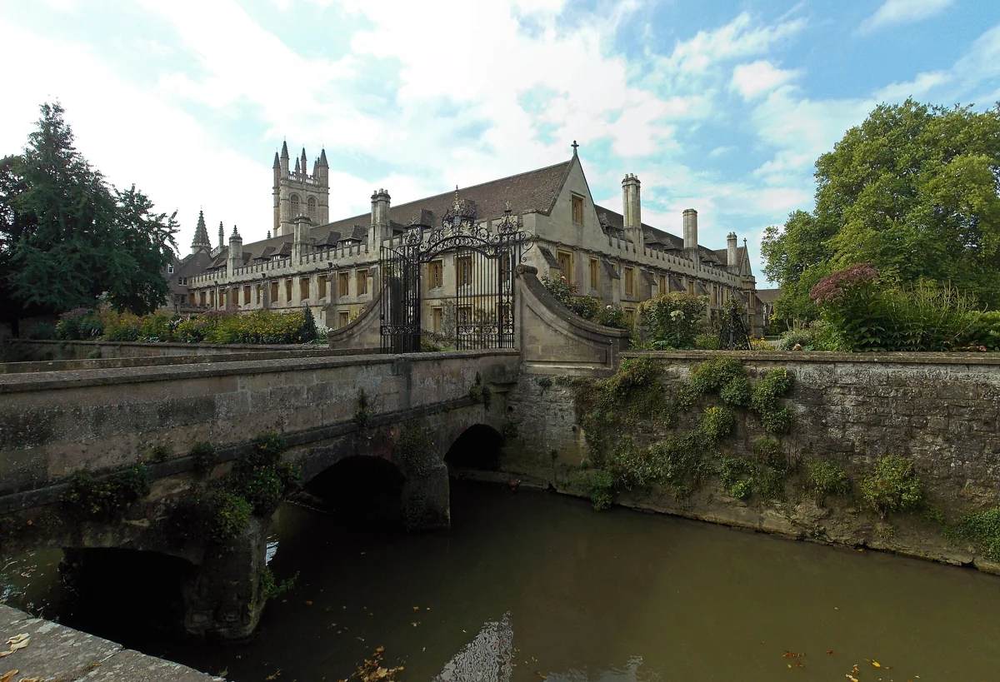
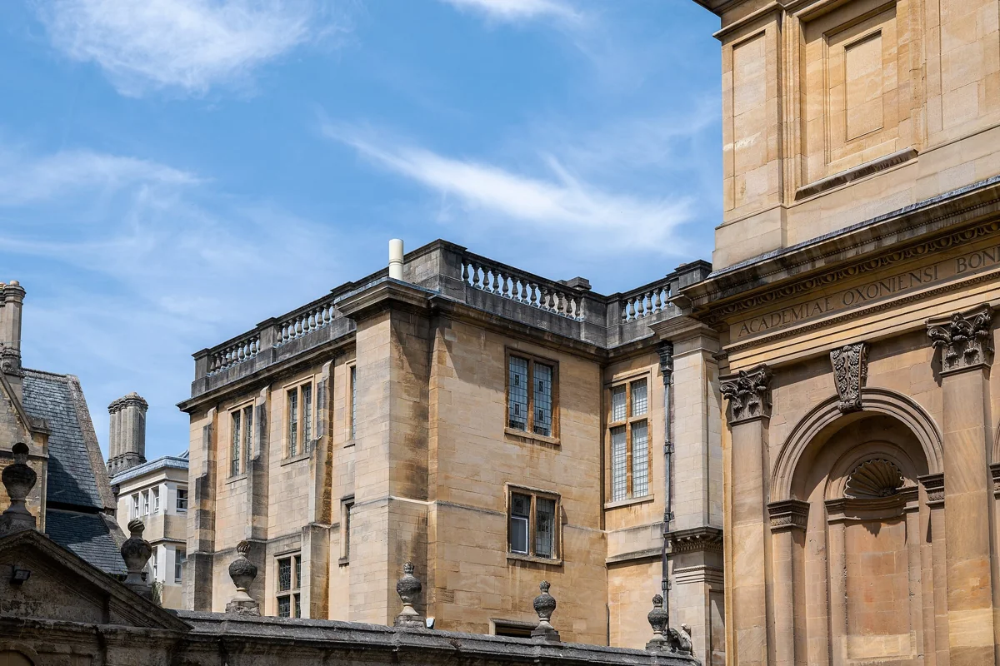
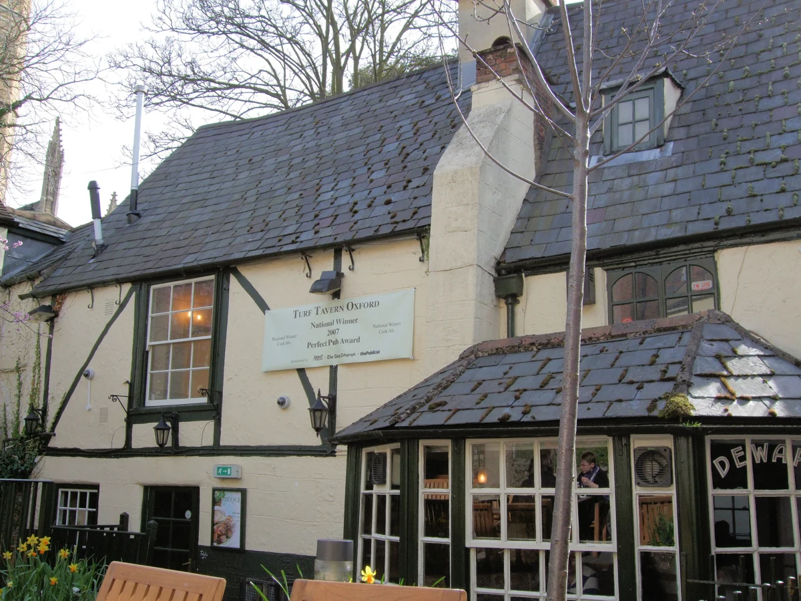
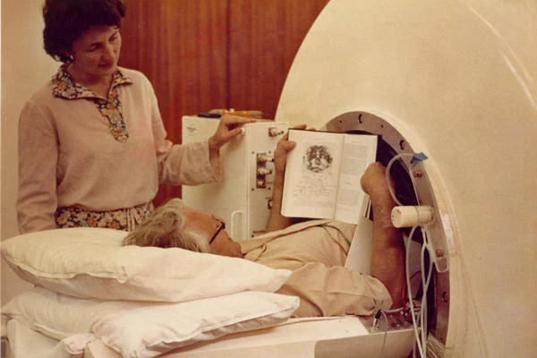

Arrival & introductions
- 10:15am
- Arrive on flight UA5
Adrian will meet you and drive to Oxford.
- Check-in
- The Randolph Hotel ↗
- 2–3pm
- Introductory session with Adrian and Steve
- 7pm
- Dinner at The Rose & Crown ↗

Oxford & London · 4–7 November 2026
Adrian will meet you and drive to Oxford.
Grassroots Workspace ↗ · 46 Woodstock Road
Pall Mall, London
Technology and business.
Industrial distribution.
Products and demonstrations.
Managed by Oxford Innovation Space. Oxford Innovation was established by Martin and Audrey Wood, the founders of Oxford Instruments.
Directions ↗

A plaque beside University College on the High Street marks the site where Boyle and Hooke carried out their air-pump experiments.
Boyle’s law describes how a gas’s pressure rises as its volume falls, at a constant temperature.
The plaque & its history ↗

The fan-vaulted staircase featured in the Harry Potter films. The Tudor Great Hall inspired the Hogwarts dining-hall set.
Visits & tickets ↗
College cloisters, a deer park and a riverside walk around the water meadow.
Visitor information ↗
The Divinity School’s vaulted ceiling and Duke Humfrey’s medieval library. Explore on a 60-minute guided tour.
Tours & tickets ↗5 November: Divinity School closes at 4.30pm. 6–7 November: Divinity School closed; standard 60-minute tours unavailable. Opening details ↗

Scientific instruments, early inventions and Einstein’s blackboard from his 1931 Oxford lecture.
Visitor information ↗
A historic pub tucked down narrow passageways near the Bridge of Sighs. Low beams, courtyard tables and real ales.
Menus & visiting ↗European classics, contemporary art and a garden terrace at the Old Bank Hotel.
Independent cafés, pizza, Thai and Ethiopian food, with books and coffee at Gulp Fiction.
Classic British cooking, oil paintings and a walled terrace at the Old Parsonage.
Riverside dining in a working boathouse, with an extensive wine list.
A thatched pub near Port Meadow, with seasonal British food and a spacious garden.

Martin and Audrey Wood founded Oxford Instruments in 1959, helping turn Oxford’s magnet research into MRI technology. They later established Oxford Innovation, whose workspace business manages Grassroots.
Another connection: Oxford Instruments’ Nova 600 X-ray source drawings specify Swagelok cooling connections.

At Harwell, Diamond Light Source uses intense X-rays to examine materials as they change. Its gas-flow catalysis cell uses Swagelok connections before and after the sample, allowing reactions to be studied under a controlled gas flow.
Swagelok-based cells also support experiments that follow batteries as they charge and discharge.
Inside the experiments ↗From cryogenics to hydrogen and aviation fuels.
Velocys uses microchannel reactors to turn synthesis gas into liquid hydrocarbons, which can be upgraded into sustainable aviation fuel. Its operations connect Oxford and Houston.
Velocys ↗Kurt Mendelssohn first liquefied helium in Britain at Oxford’s Old Clarendon Laboratory on 13 January 1933. A landmark in the low-temperature physics that later underpinned superconducting magnets.
Oxford’s low-temperature history ↗The HyDUS demonstrator explores storing hydrogen in a solid metal hydride. Its stainless-steel hydrogen lines use Swagelok fittings; the 2026 report describes the integrated Culham system as not yet fully commissioned.
HyDUS project report ↗Research into pressure control for jet-engine testing led to Oxford Flow’s valves and regulators. An Oxford engineering idea with applications across industrial fluid systems.
The Oxford Flow story ↗Oxford spin-out OXCCU combines carbon dioxide and hydrogen to make jet-fuel-range hydrocarbons. Its OX1 demonstration plant is at Oxford Airport.
Oxford’s OXCCU story ↗High-speed gas flow, turbine cooling and heat transfer are studied at Osney. The institute grew from research in a former power station, with a longstanding Rolls-Royce connection.
The institute’s history ↗Just beyond Oxfordshire, Castrol’s Pangbourne research explores liquid immersion cooling for computing. Servers are immersed in a specialist fluid to carry heat away.
Castrol’s cooling research ↗